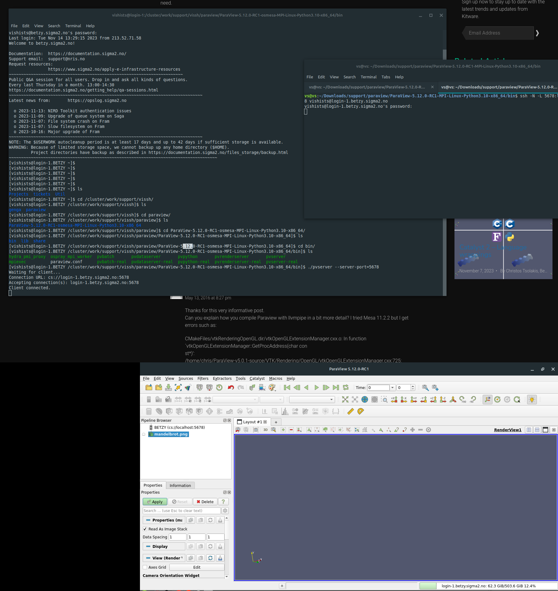

ParaView Server
Context
Running ParaView using remote desktop software on our clusters is far from ideal because it adds an unnecessary layer of virtualization, making the application run slower and taxing the server and other users running their applications.
Running ParaView using its built-in server option has a few advantages:
You do not rely on IT support to install a particular version of the software;
It is possible to run the latest version, as long as you download the newer version from ParaView website on your local machine and on the server;
You can specify exactly how much resources you need (including CPUs and also GPUs where available) and they will be allocated to your project;
It runs much better on your, already familiar, local computer.
Warning
The packages and commands that we will show below depend on which machine you have access to:
Betzy: since it only has AMD processors and A100 GPUs, you will have to switch environments and run either the “egl” or “osmesa” packages (the former is probably slightly faster). Please, follow the instructions on this guide for AMD setups.
Saga: this cluster has Intel and AMD CPUs and different GPUs available. Remember that P100 is only available for Intel architecture and A100 for AMD architecture so the commands will vary depending on which GPU is selected. Either way, both “egl” and “osmesa” packages can also be used.
Download ParaView software
Linux version on the cluster
All our servers already have a version installed as a module. However, we recommend the download and usage of “osmesa” or “egl” versions available on ParaView website, as they have CPU and GPU acceleration and the 3D rendering on ParaView happens much faster.
In fact, we ran some benchmarks:
Version: 5.10.1-MPI (installed module version)
Allocation command: `salloc --nodes=1 --ntasks-per-node=1 --cpus-per-task=1 --time=00:30:00 --mem=20G --account=nn9999k`
PV Server command: `srun ./pvserver --server-port=7755 --force-offscreen-rendering`
Message: "Display is not accessible on the server side. Remote rendering will be disabled."
Time: 1m57s
Version: 5.10.1-osmesa
Allocation command: `salloc --nodes=1 --ntasks-per-node=1 --cpus-per-task=1 --time=00:30:00 --mem=20G --account=nn9999k`
PV Server command: `srun ./pvserver --server-port=7755 --force-offscreen-rendering`
Message: "None"
Time: 59s
Version: 5.10.1-egl
Allocation command: `salloc --nodes=1 --ntasks-per-node=1 --cpus-per-task=1 --time=00:30:00 --mem=20G --account=nn9999k`
PV Server command: `srun ./pvserver --server-port=7755 --force-offscreen-rendering`
Time: did not run
Version: 5.10.1-MPI (installed module version)
Allocation command: `salloc --nodes=1 --ntasks-per-node=1 --cpus-per-task=1 --time=00:30:00 --mem=20G --partition=accel --gpus=1 --account=nn9999k`
PV Server command: `srun ./pvserver --server-port=7755 --force-offscreen-rendering`
Message: "Display is not accessible on the server side. Remote rendering will be disabled."
Time: 1m46s
Version: 5.10.1-osmesa
Allocation command: `salloc --nodes=1 --ntasks-per-node=1 --cpus-per-task=1 --time=00:30:00 --mem=20G --partition=accel --gpus=1 --account=nn9999k`
PV Server command: `srun ./pvserver --server-port=7755 --force-offscreen-rendering`
Message: "None"
Time: 48s
Version: 5.10.1-egl
Allocation command: `salloc --nodes=1 --ntasks-per-node=1 --cpus-per-task=1 --time=00:30:00 --mem=20G --partition=accel --gpus=1 --account=nn9999k`
PV Server command: `srun ./pvserver --server-port=7755 --force-offscreen-rendering`
Message: "None"
Time: 47s
Version: 5.10.1-MPI (installed module version)
Allocation command: `salloc --nodes=1 --ntasks-per-node=1 --cpus-per-task=1 --time=00:30:00 --mem=20G --partition=a100 --gpus=1 --account=nn9999k`
PV Server command: `srun ./pvserver --server-port=7755 --force-offscreen-rendering`
Message: "Display is not accessible on the server side. Remote rendering will be disabled."
Time: 1m11s
Version: 5.10.1-osmesa
Allocation command: `salloc --nodes=1 --ntasks-per-node=1 --cpus-per-task=1 --time=00:30:00 --mem=20G --partition=a100 --gpus=1 --account=nn9999k`
PV Server command: `srun ./pvserver --server-port=7755 --force-offscreen-rendering`
Message: "None"
Time: 20s
Version: 5.10.1-egl
Allocation command: `salloc --nodes=1 --ntasks-per-node=1 --cpus-per-task=1 --time=00:30:00 --mem=20G --partition=a100 --gpus=1 --account=nn9999k`
PV Server command: `srun ./pvserver --server-port=7755 --force-offscreen-rendering`
Message: "None"
Time: 19s
Download the version you desire for your operating system and the same version for Linux. You will need to upload the .tar.gz file to your home or project directory and extract it with the command tar -xvf nameOfFile.tar.gz
Windows client for your local computer
If your local machine runs Windows, you have to install ParaView executable or, in case you don’t have Administrator permissions to install the software, you can also download the zip file, extract it and run the paraview.exe file inside the /bin folder
Also, if an error appears when opening the program saying a dll is missing msmpi.dll , you will need to download and install msmpisetup.exe from this link: https://www.microsoft.com/en-us/download/details.aspx?id=105289 . Ask for an administrator to install it for you.
Mac client for your local computer
For the Mac version, it is enough to download the same version as the one that will run on the cluster and install it on your local machine. Just make sure to download the correct architecture version, Intel or Apple Silicon.
Allocating resources for the project
Run the following command: salloc --nodes=1 --ntasks-per-node=1 --cpus-per-task=1 --time=00:30:00 --mem =20G --partition=a100 --gpus=1 --account=nnXXXXk
Please, note that the command above is tailored for a system with the A100 GPU available, such as Saga or Betzy. If the command above doesn’t work, refer to the warning message at the beginning of this guide and take a look at this documentation or on the benchmarks as we have provided the allocation commands we ran.
Also note that we are asking 1 CPU and 1 GPU only for 30 minutes. If you need more resources and time, adjust the parameters accordingly.
The A100 GPU is faster but, if resources are not available and you are running on Saga, try the P100 GPU changing the --partition flag from “a100” to “accel”.
The output will be similar to this one:
salloc: Pending job allocation 5442258
salloc: job 5442258 queued and waiting for resources
salloc: job 5442258 has been allocated resources
salloc: Granted job allocation 5442258
salloc: Waiting for resource configuration
salloc: Nodes gpu-12-8 are ready for job
Loading “libOpenGL.so.0” with A100 “egl” package
Due to a different architecture, our A100 GPU runs paired with an AMD CPU. You can check more details about the hardware in these pages: (Betzy) (Saga)
If you want to run the “egl” package, you will have to:
Switch environments running the following commands:
module reset
module --force swap StdEnv Zen2Env
Load the module with the following commands (please, adapt the paths and the project number):
module use /cluster/projects/nnXXXXk/EasyBuild
module avail | grep -i libglvnd
module load modules/all/libglvnd/1.4.0-GCCcore-11.3.0
NOTE: On the simulation we tested, the difference between “osmesa” and “egl” packages was negligible as well as increasing the number of allocated GPUs (only used by “egl”). Do your own tests to find the optimal resources and ParaView version for your case.
Running ParaView Server
Go to the /bin folder with the cd command and run the following (replace the “XXXX” for a random 4-digit number):
srun ./pvserver --server-port=XXXX --force-offscreen-rendering
NOTE: You can read more about the --force-offscreen-rendering option on Paraview website. It seems to render slightly faster.
You should see a message like this:
Waiting for client...
Connection URL: cs://gpu-12-8:5678
Accepting connection(s): gpu-12-8:5678
Creating a tunnel between your PC and the Server
ParaView server needs to communicate with your computer and for this, simply open a new terminal window and type:
ssh -N -L XXXX:node:XXXX username@login-Y.server.sigma2.no
Please, replace the following:
`XXXX` - with the chosen 4-digit port
`node` - the number of the node. You can see that on the "Accepting Connection" or salloc messages.
`username` - your username on our servers
`Y` - the login node you connected previously (you can see it on the pvserver message below)
`server` - replace with betzy or saga
Connect ParaView’s local client to the server
Open the ParaView executable and follow the steps below:
Click on File > Connect
Add Server
Choose a name and fill in “Host” with
localhostand “Port” with the 4-digit number you chosenClick Configure > Save
A new connection will be created. Now, click on “Connect”
If everything is configured correctly, you should see on your left side under “Pipeline Browser” the client connected and a message on the terminal saying “Client connected”
Here’s an image with an overview of the whole process:
